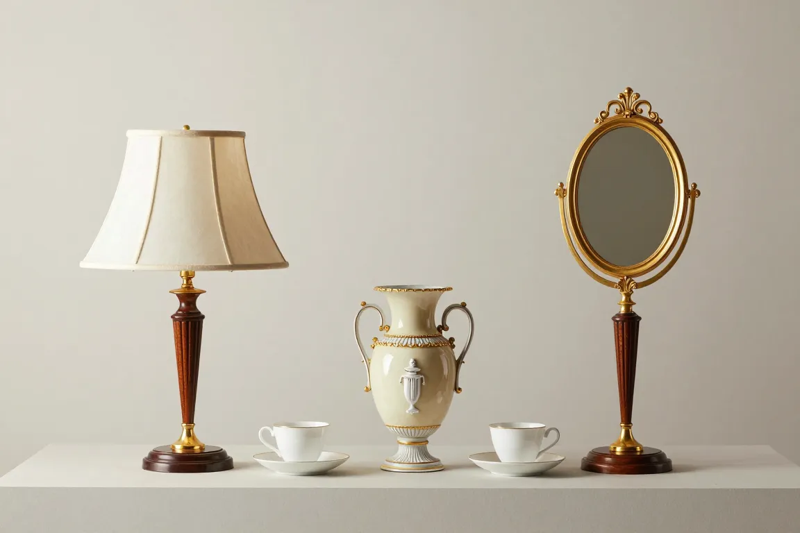

Husholdningsvarene fra de første engelske fabrikkene: mahognimøbler, creamware og jasperware, ormolu og Sheffield plate, alt laget i serie etter klassiske modeller fra arkitekten og mønsterboken.

Kjerneidé
En fabrikk kan lage en gjenstand som ser ut som et verk fra antikken: formen kommer fra den klassiske modellen, og formen, dreiebenken og stempelet gjentar den med en fin finish.
Designprinsipper
Hent hver form fra en klassisk modell: en urne, en søyle, en vase eller et akantusblad.
Bruk et slankt, rett ben med 8 til 12 kanneleringer, eller et dreid ben med en avsmalnende fot.
Bruk mahogni med en markert finér og en fin fransk polering på alle store trepartier.
Legg ornamentet i et smalt bånd: en perle, et rør, en gresk nøkkel eller en kornakskjede på 10 til 25 mm.
Lag et tynt, støpt og forgylt metallbeslag til hvert håndtak, hver veggarm og hvert klokkeskap.
Hold en lys bunn, som krem, salvie eller stein, og ett forgylt innslag per gjenstand.
Tegn formen slik at et verksted kan gjenta den med en form, en dreiebenk eller et stempel.